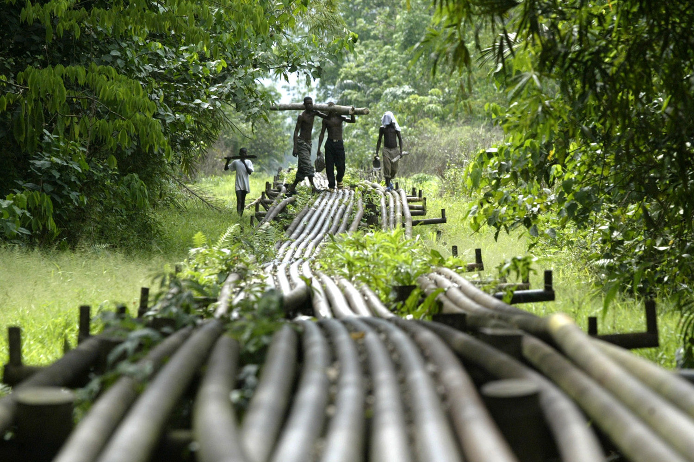

Politics & Economy
Politics: Government
Nigeria is a federal republic with a presidential system. The constitution provides for separation of powers among the three branches of government. General elections held in February 1999 marked the end of 15 years of military rule and the beginning of civilian rule based on a multiparty democracy. General elections were held for the second consecutive time in April 2003. In both elections, President Olusegun Obasanjo and his party, the People’s Democratic Party (PDP), were victorious. Despite the consolidation of democratic rule following years of military dictatorship, some feared that in the absence of a clear successor, the president might seek to amend the constitution so that he could run for a third term in 2007. In May 2006, however, the Nigerian Senate rejected a constitutional amendment that would have permitted a third term. On April 21st 2007, a Presidential Election was held that herald in Alhaji Umaru Musa Yar’Adua from the People’s Democratic Party (PDP) as President. On MAy 6th 2010, the Vice President Goodluck Jonathan was sworn in as President of the Federal Republic of Nigeria and the 14th head of state. And finally on May 29 2015, the current president of Nigeria; Muhammadu Buhari, was sworn in as President of the Federal Republic of Nigeria and the 15th head of state after winning the general election.
Economy: Industry, Agriculture and Tourism
Nigeria is the largest economy in Africa, with a gross domestic product(GDP) greater than 500 billion billion and steadily grew to over 7 percent per annum between 2005 and 2014, but this growth has been slower since 2015. This growth was driven primarily by the non-oil sectors, such as financial services, telecommunications, entertainment, etc. Foreign direct investment (FDI) inflows have been strong, averaging 2 billion dollars per quarter since 2013, with over 70 percent of this in the non-oil sectors. Nigeria’s economy is actually more diversified than it seems, with the oil sector contributing only about 14 percent to GDP. Nevertheless, Nigeria ought to be doing more to diversify with the significant natural and human resources with which Nigeria is blessed. There is no doubt that [il has contributed substantially to Nigeria’s revenue since its discovery in 1956 and more especially, since 1970 when its price was on the upward trend. Yet, oil receipts and their management have challenged governance to the core over time in Nigeria. Deeper economic diversification is urgent to undertake structural transformation, buffer the domestic economy from externally transmitted shocks and accelerate growth accompanied by job creation. Nigeria receives nearly 1.5 million visitors each year (according to the World Tourism Organization), but many of these people come on business or to visit family and friends. Tourism in Nigeria is rather undeveloped but there are some magnigicant placess in Nigeria that should be seen by everyone.
